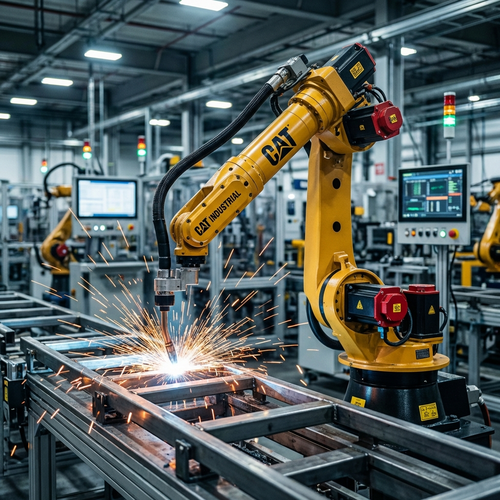

How do they work?
The Technology Behind Them:
- Robotic Arms: They imitate a human arm but with more power. They have "joints" to move in many directions.
- End Effectors (The Hand): The tool at the end of the arm changes based on the job (e.g., a gripper, a welder, or a paint sprayer).
- Sensors: They use sensors to detect objects and ensure they don't hit anything (or anyone) nearby.
Where do they work?
- 1. Car Manufacturing: This is the most common use. Robots weld parts together and paint cars perfectly without making mistakes.
- 2. Electronics Assembly: They are used to assemble tiny parts inside smartphones and laptops with high precision.
- 3. Warehouses (Logistics): Robots move heavy boxes and organize shelves in giant warehouses like Amazon.
Did You Know?
- 1. The First One: The first industrial robot was called "Unimate". It started working in a General Motors factory in 1961!
- 2. Super Strong: Some industrial robots can lift over 1,000 kg (like lifting a small car).
- 3. No Breaks: Unlike humans, these robots can work 24 hours a day, 7 days a week, without stopping for lunch or sleep.


The Future of Industry :
- Cobots (Collaborative Robots): New robots are designed to work safely alongside humans, not just inside cages.
- Lights-out Manufacturing: Factories that can run 24/7 in the dark without any human workers inside.
- AI Integration: Robots will learn to fix their own mistakes without needing a programmer.